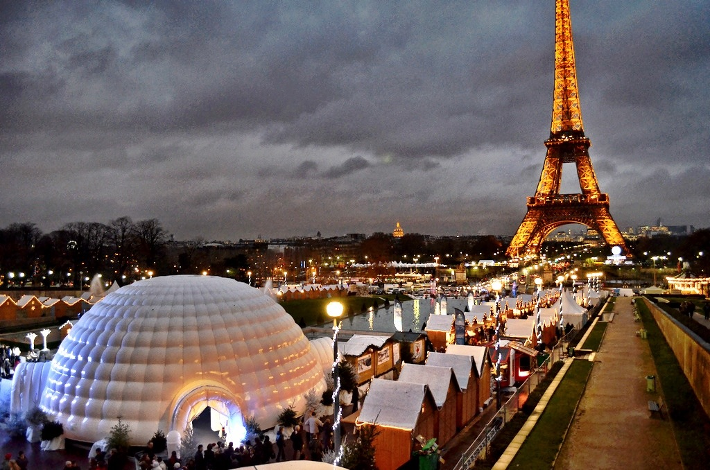
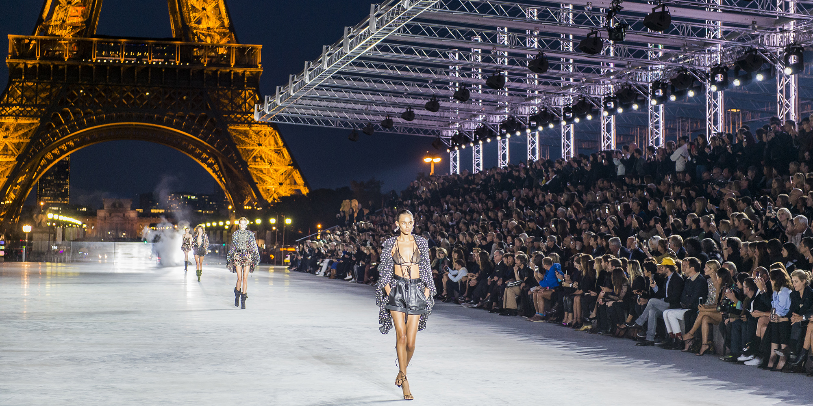
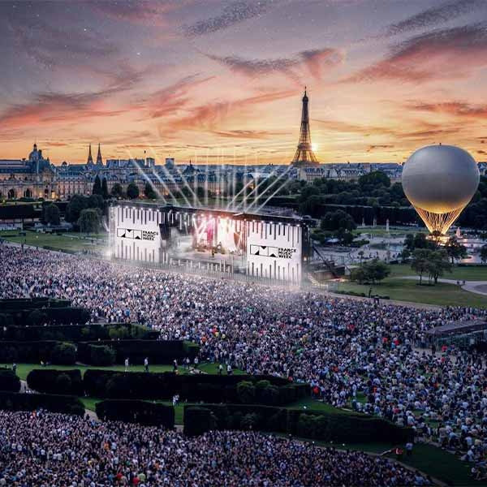
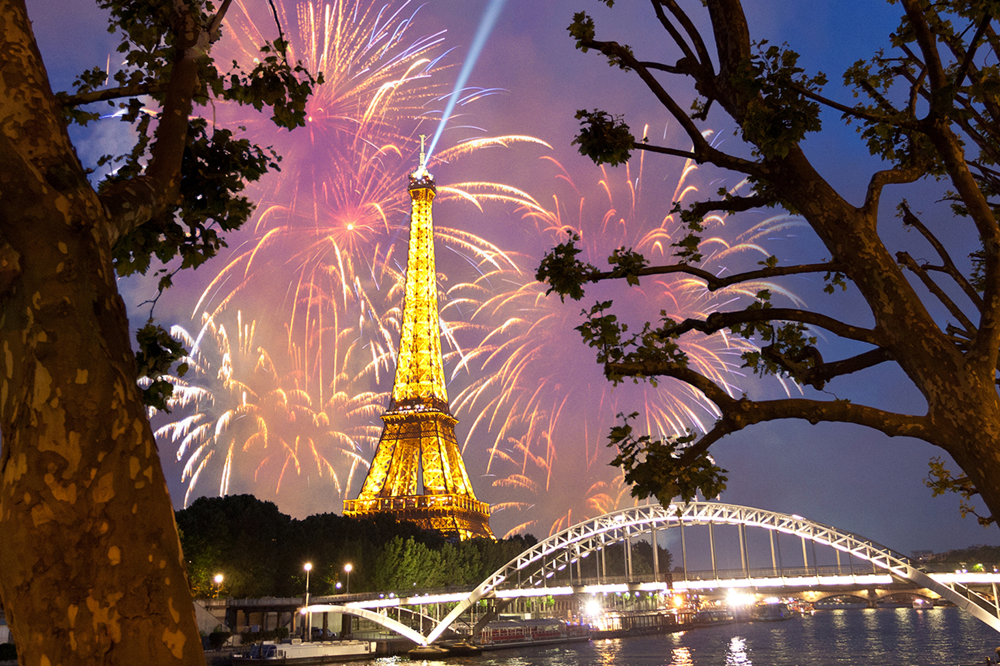
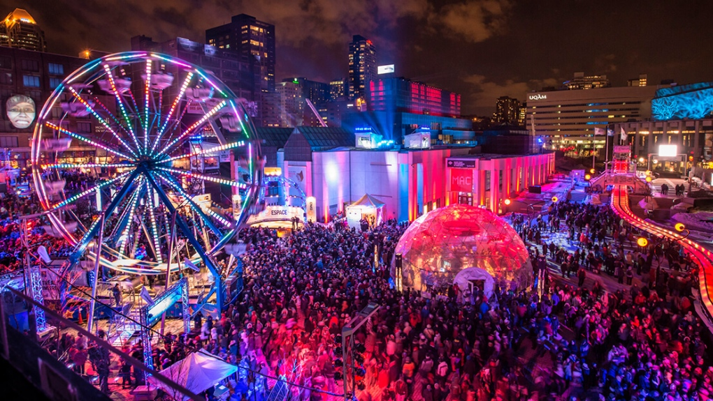

No matter time of year you visit, Paris always has something going on! Here are 5 yearly events you can see in Paris!
1. Christmas and New Years

Parisian Christmas
Similar to a lot of other European countries, Christmas markets are a yearly tradition in France, and especially in Paris. Parisian Christmas markets are known for their festive atmosphere, featuring wooden chalets filled with high-quality French artisan crafts, delicious food, and mulled wine. They transform the city with sparkling lights and decorated trees, and popular markets can be found at locations like the Jardin des Tuileries, Notre Dame, and Montmartre. You can also enjoy rides and even ice skating in most Christmas Markets around Paris!
2. Paris Fashion Week

Experience the Fashion Capital of the World!
Paris Fashion Week is one of the "Big 4" of fashion weeks alongside London, New York, and Milan. Paris Fashion Week is a prestigious, semi-annual event where top fashion designers present their new seasonal collections to industry professionals through runway shows, presentations, and exclusive events. There are two events every year, one in Spring and one in Autumn, to showcase seasonal designs. Paris is well known for its fashion, with famous designers such as Coco Chanel, Jean Paul Gaultier, and Christian Dior all originating in France, and Paris Fashion Week truly continues France's legacy in representing high fashion!
3. Fete De La Musique

The Biggest Music Festival in Paris
Fête de la Musique is an annual music festival in Paris, held on June 21st, the summer solstice. On this day, the city transforms into a free music celebration where streets, parks, and public spaces host spontaneous and organized performances by musicians of all levels and genres. Started in Paris in 1982, it is a day for both professional and amateur artists to play music for free, and the celebration has since become an international event in over 120 countries. A wide range of genres and artists perform every year, so no matter what you're into, there's bound to be something you like!
4. Bastille Day

France's National Holiday
Bastille Day is France's national holiday, celebrated on July 14, which commemorates the storming of the Bastille prison on July 14, 1789. This event was a turning point in the French Revolution, as it symbolized the overthrow of the monarchy and the start of the struggle for liberty, equality, and fraternity. It is a festive national holiday marked by a large military parade on the Champs-Élysées, a spectacular fireworks display at the Eiffel Tower that evening, and numerous Firemen's Balls across the city. Think of it like the French version of the 4th of July!
5. Nuit Blanche

Explore late-night Paris
Nuit Blanche is an annual, all-night arts festival in Paris that transforms the city into a massive, free-access art gallery from dusk till dawn. It features a wide range of contemporary art, including installations, performances, music, light shows, and video projections, in public spaces like museums, parks, and streets. The event's name translates to "White Night" from French, referring to a sleepless night of artistic celebration. This unique event gives you the opportunity to explore Paris lit by neon and moonlight, as well as a chance to immerse yourself in a world of art and expression all throughout the city!